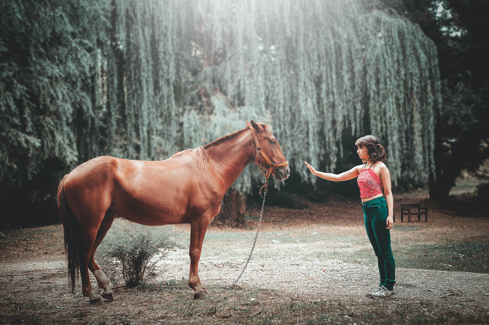

Hi there. Welcome to child therapy NZ. We hope that we can help you in some manner. Our services are listed below.
Services
Child and Adolescent Psychotherapy
One on one child psychotherapy (in person in Auckland or online)
I am committed to providing therapeutic interventions with a difference that are effective for short or long-term work.
Counselling/Therapy Services
My specialty is helping children, young people and their families with feelings and behaviors. I liaise closely with parents/caregivers to hear their concerns, offer support and provide practical solutions while keeping them informed and updated with their child/young person’s progress. I am trained in psychodynamic psychotherapy but in my practice, I use a range of therapeutic models according to age, individual, and family needs. Some of these models include Psychodynamic Therapy, Attachment Therapy, Sand Tray Therapy and Psycho-Education.

Areas of Specialty
- Anxiety, separation anxiety, and social anxiety
- Depression
- Child/Adolescent and parent relationship difficulties
- Adjustment problems including parental separation
- Grief and loss for all ages
- Behaviour problems – Bullying, School refusal, Anger etc
- Friendship issues
- Attachment problems
- Effects of trauma, abuse and neglect
- Eating disorders (FBT trained)

Counselling/Therapy Approach
Interventions are tailored to best suited to the child or young person’s age and stage of development. The work is suitable for children aged five years up to late adolescents and young adulthood. All sessions are 50 minutes and can be offered weekly or fortnightly.
Children will be seen in a playroom to facilitate their expression through play, adolescents will be more likely to talk about what is happening for them but may also appreciate other forms of expression such as art or the sand tray. This type of therapy helps children to find ways of verbalising their feelings rather than act them out. The aim is to offer a safe therapeutic space for children and their parents/whanau and caregivers.
I use a mix of: child and adolescent psychotherapy, relational psychodynamic psychotherapy, animal-assisted psychotherapy, canine-assisted psychotherapy, equine-assisted psychotherapy, and family-based therapy (FBT).

Please contact me and let us talk about how I can help.
Animal assisted psychotherapy
I offer Animal Assisted Psychotherapy with my Facility Dog Riley, formerly from Assistance Dogs NZ. This is done in my consulting rooms in Albany.

Equine assisted psychotherapy
I also offer Equine Assisted Psychotherapy with horses. This takes place at a specialised equine facility in the Kumeu area and is conducted in conjunction with a specialist equine facilitator.


About Me
I am committed to providing therapeutic interventions with a difference that are effective for short or long-term work.
 Catherine Hunt - Registered Child and Adolescent Psychotherapist
Catherine Hunt - Registered Child and Adolescent Psychotherapist
Member of the NZ Association of Psychotherapists (MNZAP)
Member NZ Association of Child & Adolescent Psychotherapy (NZACAP)
Qualifications
- Masters of Health Science (Child & Adolescent Psychotherapy, AUT)
- Graduate Diploma in Child & Adolescent Psychotherapy (AUT)
- Diploma Teaching
Professional Experience
I am a Mother with two young children.
I grew up with animals as a major part of my life and now that I am a psychotherapist I also use animals, where appropriate, in my practise.
I have been working in mental health since 2018 and have worked for District Health Boards and NGO services across Auckland in both tertiary services and community care. I spent 11 years teaching Early Childhood Education (ECE) before moving into mental health.
Counselling/Therapy Services
My specialty is helping children, young people and their families with feelings and behaviors. I liaise closely with parents/caregivers to hear their concerns, offer support and provide practical solutions while keeping them informed and updated with their child/young person’s progress. I am trained in psychodynamic psychotherapy but in my practice, I use a range of therapeutic models according to age, individual, and family needs. Some of these models include Psychodynamic Therapy, Attachment Therapy, Sand Tray Therapy and Psycho-Education.
I offer Animal-Assisted Psychotherapy with my Facility Dog Riley, formerly from Assistance Dogs NZ.
I also offer Equine-Assisted Psychotherapy with horses.
Areas of Specialty
- Anxiety, separation anxiety, and social anxiety
- Depression
- Child/Adolescent and parent relationship difficulties
- Adjustment problems including parental separation
- Grief and loss for all ages
- Behaviour problems – Bullying, School refusal, Anger etc
- Friendship issues
- Attachment problems
- Effects of trauma, abuse and neglect
- Eating disorders (FBT trained)
Counselling/Therapy Approach
Interventions are tailored to best suited to the child or young person’s age and stage of development. The work is suitable for children aged five years up to late adolescents and young adulthood. All sessions are 50 minutes and can be offered weekly or fortnightly.
Children will be seen in a playroom to facilitate their expression through play, adolescents will be more likely to talk about what is happening for them but may also appreciate other forms of expression such as art or the sand tray. This type of therapy helps children to find ways of verbalising their feelings rather than act them out. The aim is to offer a safe therapeutic space for children and their parents/whanau and caregivers.
I use a mix of: child and adolescent psychotherapy, relational psychodynamic psychotherapy, animal-assisted psychotherapy, canine-assisted psychotherapy, equine-assisted psychotherapy, and family-based therapy (FBT).
Contact
Please contact me.